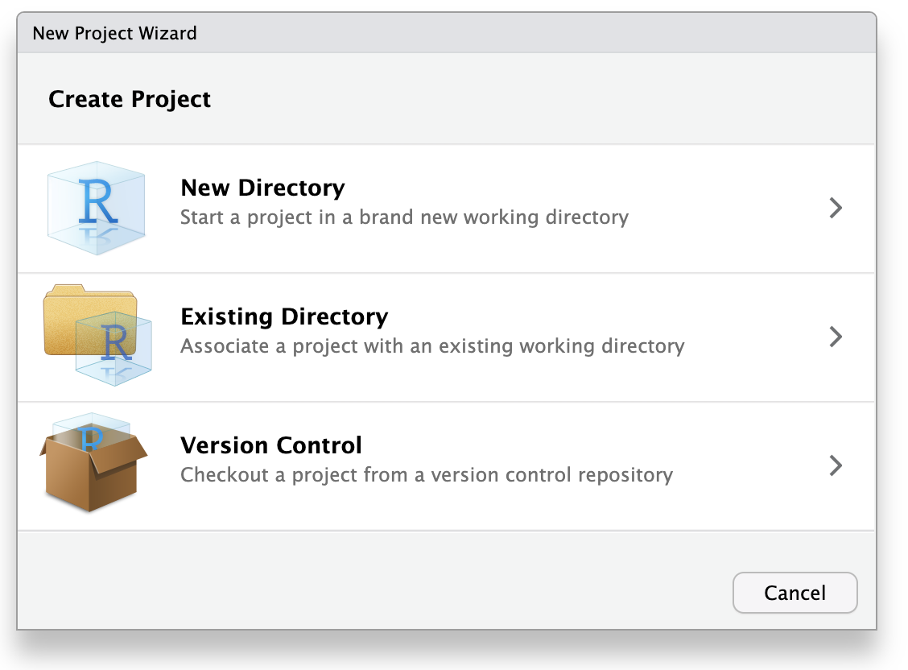
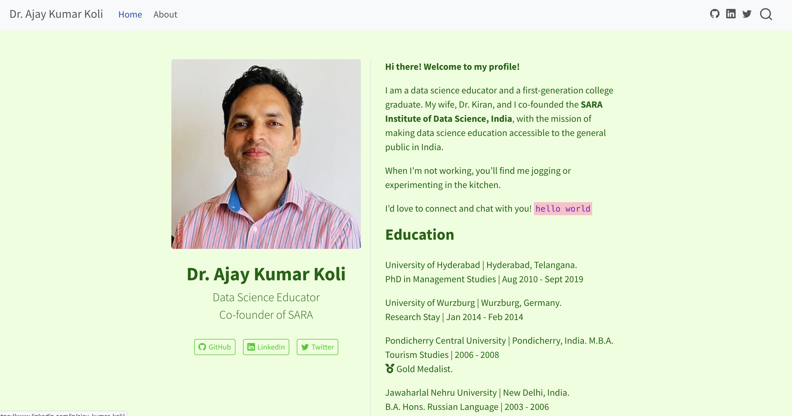
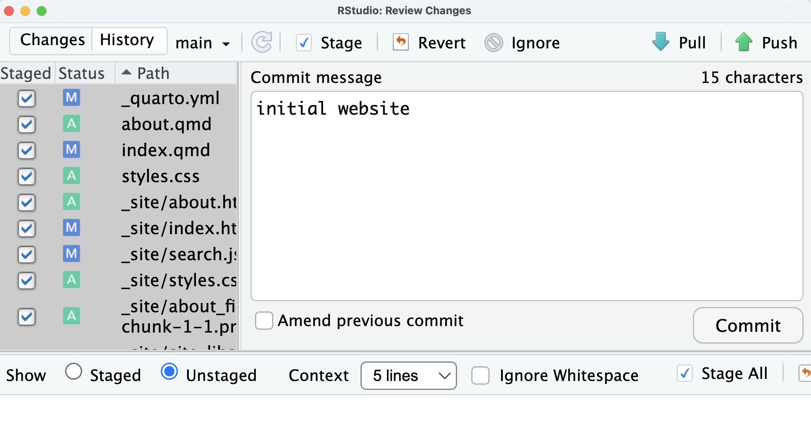
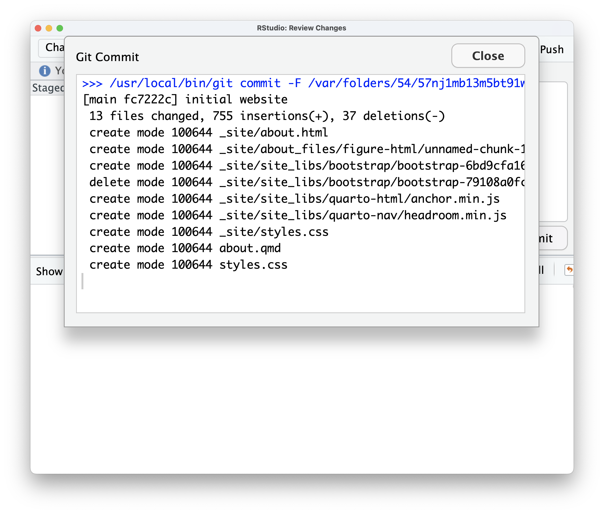

WEBSITE
Dr. Ajay Kumar Koli (PhD) \(\cdot\) SARA Institute of Data Science, India
Website … Why?
DeepSeek: “A website is not just a luxury—it’s a necessity for visibility, growth, and credibility in the digital age.”
ChatGPT: “to showcase who you are and what you do. … your digital identity, share your expertise, and open doors to new opportunities.”
Le Chat: “a powerful tool for personal branding, networking, and career development.”
Create a GitHub Repository
Copy Repo Link
Create Version Control Project
Create Version Control Project

Create _quarto.yml File
Understanding the Project Structure
_quarto.yml: Configuration file for your website.index.qmd: The homepage of your website.about.qmd: An example about page.styles.css: Custom CSS for styling your website.
Create the Homepage
Edit index.qmd
---
title: "Dr. Ajay Kumar Koli"
subtitle: "Data Science Educator <br>Co-founder of SARA"
image: images/ajay.jpeg
about:
template: trestles
links:
- icon: github
text: GitHub
href: https://github.com/sara-institute
- icon: linkedin
text: LinkedIn
href: https://www.linkedin.com/in/ajay-kumar-koli/
- icon: twitter
text: Twitter
href: https://www.linkedin.com/in/ajay-kumar-koli/
---
Content goes here.Website Navigation
Edit _quarto.yml
project:
type: website
website:
title: "Dr. Ajay Kumar Koli"
navbar:
left:
- text: "Home"
href: index.qmd
- text: "About"
href: about.qmd
tools:
- icon: github
href: https://github.com/koliajaykr
- icon: linkedin
href: https://www.linkedin.com/in/ajay-kumar-koli/
- icon: twitter
href: https://x.com/ajay_koliiBuilt-In Templates, edit index.qmd
More information here https://quarto.org/docs/websites/website-about.html#templates
Themes; edit _quarto.yml
- Quarto includes 25 themes from the Bootswatch, check out other themes.
Website Colors
Colors; edit _quarto.yml
fontcolor: The main color for text on the site.linkcolor: Color of the links.backgroundcolor: Background color of the whole site.monobackgroundcolor: Background color for code chunk.
Colors; edit _quarto.yml
Fonts; edit _quarto.yml
CSS
Cascading Style Sheets (CSS) is a style sheet language.
CSS is used for specifying the presentation and styling of a document written in a markup language such as HTML
CSS; edit _quarto.yml
Render Website
üöÄ Launch Your Website
Your files for the github
Select files and click Commit
Commit message and click Commit
Let it Run and Close
Branch ahead Origin and click Push
After update close all windows
Check GitHub Repo for Latest Updates
Open Netlify Account.
Netlify
Add New Site \(\rightarrow\) Import an Existing Project \(\rightarrow\) Choose GitHub
Netlify
In Publish Directory box write
_siteDeploy website-ajay \(\rightarrow\) Site deploy in progress
Site Published, Configure Site
Change Site Name
Site Thumbnail with updated URL
Add Content
Aenean placerat luctus tortor vitae molestie. Nulla at aliquet nulla. Sed efficitur tellus orci, sed fringilla lectus laoreet eget. Vivamus maximus quam sit amet arcu dignissim, sed accumsan massa ullamcorper. Sed iaculis tincidunt feugiat. Nulla in est at nunc ultricies dictum ut vitae nunc. Aenean convallis vel diam at malesuada. Suspendisse arcu libero, vehicula tempus ultrices a, placerat sit amet tortor. Sed dictum id nulla commodo mattis. Aliquam mollis, nunc eu tristique faucibus, purus lacus tincidunt nulla, ac pretium lorem nunc ut enim. Curabitur eget mattis nisl, vitae sodales augue. Nam felis massa, bibendum sit amet nulla vel, vulputate rutrum lacus. Aenean convallis odio pharetra nulla mattis consequat.